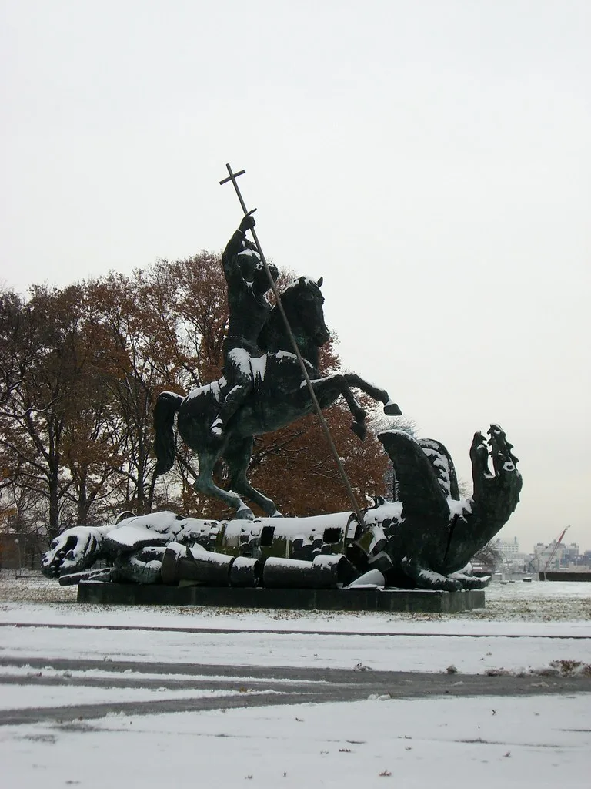
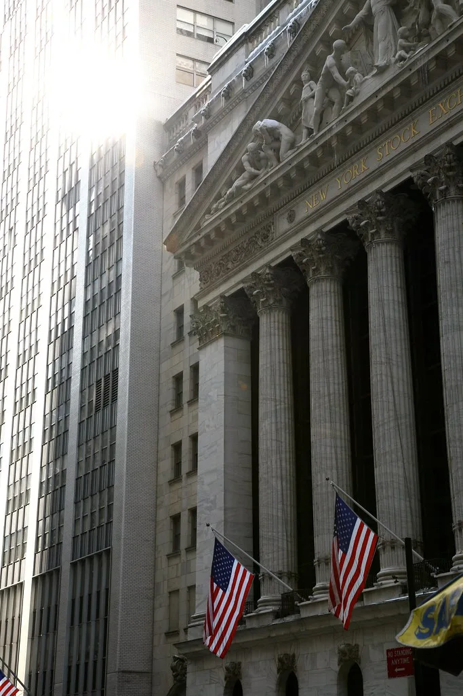

이재명 대통령, 유엔총회서 '한반도 평화공존' 3대 청사진 제시
이재명 대통령이 22일(현지시간) 미국 뉴욕 유엔본부에서 열린 제81차 유엔총회 기조연설을 통해 한반도 평화공존을 위한 3대 청사진을 제시하고, 오랫동안 멈춰있는 북·미 대화의 조속한 재개를 촉구했다. 이 대통령은 연설에서 가장 핵심적인 과제로 한반도의 오래된 전쟁을 종식하고 항구적인 평화체제를 구축하는 일을 꼽으며, 이를 위한 다자적 접근의 필요성을 강조했다. 취임 이후 여러 국제 무대에서 실용외교를 강조해 온 이 대통령이 유엔이라는 다자 무대에서 이런 구상을 공식화했다는 점에서 외교가의 관심이 집중됐다.
이 대통령이 제시한 3대 청사진은 서로의 체제를 존중하는 '포용적 평화공존', 무력 충돌의 위험 없이 안정적으로 공존하는 '안정적 평화공존', 세계 평화에 기여하는 '책임 있는 평화공존'으로 요약된다. 이 대통령은 남북이 상호 체제를 존중하고 차이를 인정하는 바탕 위에서 협력을 통한 공동 성장을 모색해 나가겠다고 밝히며, 보건과 재난 대응, 기후위기 대응 등 비정치적 분야에서부터 남북 협력의 접점을 넓혀가겠다는 구상을 내놓았다. 정치·군사적으로 민감한 의제보다 상대적으로 합의 가능성이 높은 인도적·기술적 분야부터 협력을 쌓아나가겠다는 뜻으로 풀이된다.

이 대통령은 안정적인 평화공존의 첫걸음으로 남북 간 기본적인 소통 채널부터 복원해 신뢰를 쌓아나가는 것이 중요하다고 강조했다. 위기를 방지하고 우발적 갈등을 통제할 수 있는 제도적 장치를 마련해 나가겠다는 구상도 함께 밝혔다. 이는 정치·군사적으로 민감한 사안을 곧바로 다루기보다, 실무적이고 낮은 단계의 대화부터 복원해 신뢰를 축적하겠다는 단계적 접근으로 풀이된다.
북한 비핵화와 관련해서는 북한의 핵·미사일 능력 고도화를 우선 중단시키고, 중기적으로는 이를 점진적으로 축소한 뒤, 장기적으로 '핵 없는 한반도'를 지향하는 단계적 해법을 제시했다. 이 대통령은 이런 로드맵을 통해 북·미 대화가 조속히 재개되고, 나아가 한반도 전쟁 종식과 평화체제 전환을 위한 당사자 간 대화로 발전할 수 있는 발판을 마련해 나가겠다고 밝혔다. 단번에 완전한 비핵화를 요구하기보다 단계별 목표를 설정해 협상의 문턱을 낮추려는 접근으로, 그동안 교착 상태에 머물러 있던 북핵 협상의 물꼬를 트기 위한 현실적 대안이라는 평가가 나온다.

이 대통령은 한반도 평화체제 구축이 남북만의 과제가 아니라 미국, 중국 등 관련국들이 오랫동안 함께 논의해 온 사안이라는 점을 짚으며, 다자 대화를 통해 이 논의를 본격화해 나가겠다는 뜻도 밝혔다. 이 대통령은 유엔 사무총장과의 별도 면담에서도 한반도 평화공존을 위한 국제사회의 소통과 협력을 당부한 것으로 전해졌다. 아울러 이번 뉴욕 방문 기간 여러 다자·양자 외교 일정을 소화하며 글로벌 에너지 협력 등 경제 분야 의제도 함께 논의한 것으로 알려졌다.
외교가에서는 이번 기조연설이 임기 내내 강조해 온 실용적·단계적 대북 접근 기조를 국제 무대에서 재확인한 것으로 평가하면서도, 북·미 대화 재개 여부는 결국 미국과 북한 양측의 호응에 달려 있다는 점에서 실질적인 진전까지는 시간이 필요할 것으로 내다보고 있다. 정부는 이번 연설을 계기로 관련국과의 물밑 외교를 이어가며 대화 재개 여건 조성에 주력할 방침이다. 정부 관계자들은 이번 청사진이 향후 남북 관계 및 북핵 협상 국면에서 우리 정부의 기본 입장을 가늠하는 참고선이 될 것이라고 설명했다.